교통기사 (2014-03-02 기출문제)
1과목: 교통계획
1. 버스회사 운영체계에서 공영버스와 민영버스에 관한 설명 중 틀린 것은?
- 승객수요가 많지 않은 지역의 균형 잡힌 서비스공급은 공영버스가 좋다.
- 승객의 편리성과 안전성은 민영버스가 좋다.
- 공영버스는 정치적 간섭을 받는다.
- 비용측면에서 공영회사가 민영회사보다 비효율적이다.
(정답률: 86%)

2. 다승객차량인 버스에 통행우선권을 부여하여 버스 통행로를 개선하기 위한 정책으로 거리가 먼 것은?
- 버스 우선차로
- 버스 전용차로
- 버스 우선신호
- 버스 정보시스템
(정답률: 98%)
3. 다음 중 ITS의 목적으로 가장 거리가 먼 것은?
- 도로의 교통안전을 도모하기 위하여
- 도로 이용의 효율성을 제고하기 위하여
- 대중교통정보를 효과적으로 제공하기 위하여
- 향후 통행 도착량의 증가를 정확히 예측하기 위하여
(정답률: 92%)
4. 한 통근자가 직장에 가기 위하여 집에서 택시로 지하철역까지 간 후 지하철로 갈아타고 직장에 도착한 경우 목적 통행수는?
- 1
- 2
- 3
- 4
(정답률: 87%)
5. 다음 중 단기교통계획의 특성으로 적합한 것은?
- 다수의 대안
- 유사한 대안
- 시설지향적
- 자본집약적
(정답률: 94%)
6. 다음 중 자료수집의 용이성과 자료분석의 편의성을 위한 교통존(traffic zone)의 설정기준에 적합하지 않는 것은?
- 각 존은 가급적 동질적인 토지이용이 포함되도록 한다.
- 행정구역을 가급적 일치시킨다.
- 간선도로가 가급적 존의 경계선과 일치하도록 한다.
- 정밀한 분석을 위해 가급적 존을 크게 한다.
(정답률: 96%)
7. 교통대안들을 평가하기 위한 방법으로 효율(efficiency) 평가방법과 효과(effectiveness)평가방법이 있다. 다음 중 두 범주의 방법론이 옳게 연결된 것은?
- 효과평가방법 : B/C 분석
- 효과평가방법 : 순현재가치법
- 효율평가방법 : 순위기법
- 효율평가방법 : 수익률법
(정답률: 78%)
8. 교통계획과정에서 통행발생(Trip Genetation) 추정시 기본입력자료가 아닌 것은?
- 승용차 대수
- 통행시간 가치
- 총 시설의 연상면적
- 인구 수
(정답률: 52%)
9. 시간가치는 교통시설 투자의 타당성 분석에서 매우 중요하다. 다음 중 시간가치를 산출할 때 사용되는 것은?(오류 신고가 접수된 문제입니다. 반드시 정답과 해설을 확인하시기 바랍니다.)
- 교통비용
- 개인임금
- 기회비용
- 여가비용
(정답률: 58%)
10. 통행발생단계에서 사용되는 모형 중 유출, 유입 통행량과 해당지역의 특성을 나타내는 여러 지표간의 상관관계를 구하여 목표연도의 통행량을 예측하는 방법은?
- 성장률법
- 프라타법
- 원단위법
- 중력모형법
(정답률: 79%)
11. 교통계획을 수립할 때 통행분포 단계에서 사용되는 모형이 아닌 것은?
- 성장인자 모형
- 중력 모형
- 교차분류분석 모형
- 간섭기회 모형
(정답률: 63%)
12. 다음 중 공영버스회사에 대한 설명으로 거리가 먼 것은?
- 공영버스회사의 운행비용은 민영회사보다 적게 든다.
- 공영버스회사는 공공성에 입각하여 버스를 운행하므로 민영회사보다 다양한 서비스 여건이 형성될 수 있다.
- 단일의 공영회사가 많은 소규모 민영회사보다 훨씬 더 효과적으로 도시전역에 걸쳐 서비스를 공급해 줄 수 있다.
- 공영회사에 대한 정치적, 행정적 간섭이 있을 수 있다.
(정답률: 91%)
13. 경전철(LRT)이 지하철에 비해 월등히 우세한 요인은?
- 속도
- 건설비
- 안정성
- 운영비
(정답률: 94%)
14. 통행배정 방법 중 용량제약(Capacity Constraint)방식을 사용하지 않는 것은?
- 분할배정법(Incremental Assignment)
- 반복배정법(lterative Assignment)
- 전량배정법(All-or-Nothing Assignment)
- 평형배정법(Equilibrium Assignment)
(정답률: 88%)
15. 교통수단선택(Modal Split)과정에 사용되는 방법이 아닌 것은?
- 프로빗(Probit)모형
- 로짓(Logit)모형
- 판별분석(Discriminant)모형
- 중력(Gravity)모형
(정답률: 77%)
16. 어느 대중교통 수단의 수요 탄력성(e)이 0＜e＜1인 경우, 요금인상이 전체 수입에 미치는 효과는?
- 요금 인상 후 전체 수입은 증가한다.
- 요금 인상 후 전체 수입은 감소한다.
- 요금 인상 정도에 관계없이 전체 수입은 변화가 없다.
- 요금 인상 정도에 따라 전체 수입은 증가ㆍ감소한다.
(정답률: 82%)
17. 평균 운행속도 25km/h로 총 노선거리 30km를 운행하며 배차간격이 5분인 버스가 있다. 이 때 필요한 최소 차량규모는?
- 15대
- 17대
- 19대
- 21대
(정답률: 68%)
18. 교통존 설정(zoning)의 3대 원칙이 아닌 것은?
- 사회ㆍ경제적 특성이 균일한 zone
- 단일중심을 가지는 zone
- 인구 및 통행량이 비슷한 zone
- 중심이 안정되는 삼각형에 가까운 zone
(정답률: 87%)
19. 10km의 노선을 운행하는 버스가 터미널과 버스정류장에서 소요되는 시간을 포함하여 시간당 평균 25km의 속도로 운행한다면 왕복 운행 시간은?
- 44분
- 46분
- 48분
- 50분
(정답률: 71%)
20. 다음 중 노드(node)에 대한 설명으로 틀린 것은?
- 버스정류장을 표현할 수 있다.
- 회전제약을 할 수 있다.
- 용량을 표현할 수 있다.
- 존 센트로이드를 표현할 수 있다.
(정답률: 84%)
2과목: 교통공학
21. 도로 서비스 수준의 등급 중 용량상태에 해당하는 것은?
- B
- C
- D
- E
(정답률: 64%)
22. 신호교차로에서 신호시간 결정시 최소녹색시간을 결정하는 요소는?
- 해당 접근로의 차량교통량
- 가로지르는 접근로의 차량교통량
- 해당 접근로의 보행교통량
- 해당 접근로의 횡단보행시간
(정답률: 72%)
23. 다음 중 car-following 모형에서 운전자의 가ㆍ감속에 영향을 미치는 요소에 포함되지 않은 것은?
- 앞차와의 속도차
- 반응민감도
- 앞차와의 간격
- 차체의 크기
(정답률: 88%)
24. 신호교차로 용량분석의 이상적인 조건에 대한 설명 중 틀린 것은?
- 차로폭은 2.5m 이상
- 교통류는 직진이며, 모두 승용차로 구성
- 접근부 정지선의 상류부 60m 이내에 진출입 차량 없음
- 접근부 정지선의 상류부 75m 이내에 노상 주ㆍ정차
(정답률: 85%)
25. 단위시간 동안에 한 지점을 통과하는 교통량을 Q(대/시), 차량의 속도를 V, 차량의 밀도(대/km)를 D라 할 때 V-D와 Q-D의 그래프로 옳은 것은?
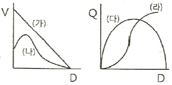
- (나), (다)
- (가), (라)
- (가), (다)
- (나), (라)
(정답률: 90%)
26. 다음 중 교통량을 조사하여 얻은 결과를 검증하기 위해 실시하는 방법은 무엇인가?
- 스크린라인 조사
- 폐쇄선 조사
- 차량번호판 조사
- 노측면접 조사
(정답률: 92%)
27. PHF(Peak Hour Factor)에 대한 설명으로 틀린 것은?
- PHF란 15분 첨두유율을 한 시간 단위로 나타낸 값에 대한 한 시간 교통량이다.
- PHF값은 항상 1.0보다 작다.
- PHF값은 하루 중의 교통량 변화를 알기 위해 계산된다.
- PHF값은 도로용량을 분석할 때 이용된다.
(정답률: 70%)
28. 다음 중 도심부 신호교차로의 서비스수준을 분석할 때 고려하는 지체가 아닌 것은?
- 균일지체(uniform delay)
- 증분지체(incremental delay)
- 추가지체(initial queue delay)
- 상관지체(interaction delay)
(정답률: 73%)
29. 운전자의 인지-반응 과정(PIEV 과정)을 순서대로 바르게 나열한 것은?
- 추측-지각-식별-행동판단
- 지각-식별-추측-행동판단
- 지각-식별-행동판단-행동 및 반응
- 식별-지각-행동판단-행동 및 반응
(정답률: 91%)
30. 일방 통행제의 장점이 아닌 것은?
- 평균통행속도 증가
- 통행거리 감소
- 용량 증대
- 안전성 향상
(정답률: 87%)
31. 다음 그림은 Greenshields의 속도-밀도 모형에서 유도된 교통량(q)과 밀도(K)의 관계를 나타낸 것이다. 관계식으로 옳은 것은? (단, μf=자유류의 속도)
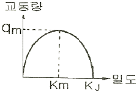
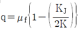
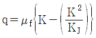
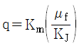
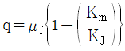
(정답률: 59%)
32. 어느 신호교차로의 한 차로군의 교통량은 1250vph, PHF는 0.80, fhv는 0.77, Fw는 0.95이다. 서비스 수준 분석을 위하여 고려되는 첨두시간 교통류율은 얼마인가?
- 1000 vph
- 1188 vph
- 1563 vph
- 1623 vph
(정답률: 60%)
33. 지점속도 조사 시 허용오차의 한계는 3km/h, 표준편차는 8km/h에서 95%의 신뢰수준을 만족시킬 수 있는 최소 표본수는?
- 28대
- 30대
- 32대
- 34대
(정답률: 70%)
34. 다음 중 도로의 기능별 분류에 속하지 않는 것은?
- 집산도로
- 국지도로
- 보조간선도로
- 지방국도
(정답률: 75%)
35. 교통류 차두시간 및 차량도착 특성의 확률분포에 대한 설명 중 옳은 것은?
- 교통량 계수기간 동안 교통량의 변화가 거의 없을 것으로 예상되는 경우 음이항분포가 사용된다.
- 얼랑(Erlang) 분포에서는 차두시간이 최소허용시간보다 작을 확률이 0아닌 아주 작은 값을 갖는다고 본다.
- 분산/평균비가 1.0보다 현저히 작을 때 음이항분포를 사용하면 좋다.
- 분산/평균비가 1.0정도이고 교토양이 적은 교통류에 이항분포를 사용하면 잘 맞는다.
(정답률: 62%)
36. 고속도로 3km구간에서 다음 표와 같이 6대의 차량에 대해 여행시간(Travel Time)을 측정하였다. 여기서 공간평균속도(Space Mean Speed)는?
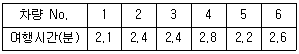
- 69.7km/h
- 74.5km/h
- 77.9km/h
- 80.0km/h
(정답률: 54%)
37. TSM의 특징 또는 기본요건이라 볼 수 없는 것은?
- 투자 및 운영비용이 저렴할 것
- 다양한 수단, 도로망, 선형대안을 제시할 것
- 계획과 시행이 단기적일 것
- 기존 시설을 최대한 이용할 것
(정답률: 81%)
38. 50m의 간격으로 검지기를 설치하여 차량속도를 측정하고자 한다. 두 지점을 통과하는 시간은 △t초라고 할 때 시속(km/h)으로 환산하기 위한 공식으로 □안에 적절한 값은?
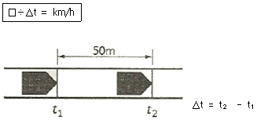
- 60
- 90
- 120
- 180
(정답률: 56%)
39. 신호 교차로에서 유효녹색시간을 결정하는 식은?
- 녹색시간-황색시간-총 손실시간
- 녹색시간+황색시간-총 손실시간
- 녹색시간-총 손실시간
- 녹색시간+황색시간
(정답률: 94%)
40. 시간평균속도
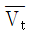
, 공간평균속도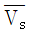
, 공간평균속도의 표준편차 σs의 관계를 바르게 나타낸 것은?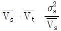
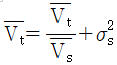
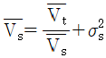
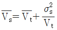
(정답률: 74%)
3과목: 교통시설
41. 평형주차 형식 외의 경우 주차단위구획의 최소 치수가 잘못된 것은?(2018년 03월 21일 개정된 규정 적용됨)
- 경형은 너비 2.0m, 길이 3.6m
- 일반형은 너비 2.5m, 길이 5.0m
- 확장형은 너비 2.6m, 길이 5.4m
- 장애인전용은 너비 3.3m, 길이 5.0m
(정답률: 68%)
42. 교차로 접근 85% 주행속도가 60km/h일 때 신호등 최소인지거리는?(오류 신고가 접수된 문제입니다. 반드시 정답과 해설을 확인하시기 바랍니다.)
- 65m
- 110m
- 135m
- 170m
(정답률: 70%)
43. 다음 중 버스정류장(Bus Bay)을 설계할 때 고려할 사항과 가장 관계가 먼 것은?
- 종단선형
- 차로의 수
- 감속차로의 길이
- 가속차로의 길이
(정답률: 78%)
44. 도로의 평면곡선의 종류가 아닌 것은?
- 복합곡선
- 배향곡선
- 완화곡선
- 오목곡선
(정답률: 70%)
45. 설계기준 자동차의 종류별 제원 중 대형자동차의 길이는 얼마인가?
- 6.5m
- 11.2m
- 13.0m
- 16.7m
(정답률: 81%)
46. 평탄지도로에서 80lm/h로 주행하는 차량의 최소정지시거는? (단, 마찰계수=0.4, 종단구배=3%, 인지반응시간 2초)(오류 신고가 접수된 문제입니다. 반드시 정답과 해설을 확인하시기 바랍니다.)
- 약 94m
- 약 104m
- 약 114m
- 약 124m
(정답률: 19%)
47. 교차로의 설계원리 중 타당하지 않는 것은?
- 상충지점 수를 늘린다.
- 상대속도를 줄인다.
- 회전교통 경로를 마련한다.
- 연속된 상충지점을 격리시킨다.
(정답률: 89%)
48. 다음 중 길어깨 설치의 목적과 가장 관계가 먼 것은?
- 고장차를 본선차도로부터 대피한다.
- 측방여유폭으로서 교통의 안전성에 기여한다.
- 노상시설을 설치하는 공간이 된다.
- 횡단보행자에게 공간을 확보해 준다.
(정답률: 64%)
49. 다음 중 평행주차방식에 비하여 각도주차방식이 갖는 일반적인 특징으로 틀린 것은?
- 연석 길이 당 주차가능 대수는 평행주차방식보다 많다.
- 통고교통에 장애를 주는 면적이 크다.
- 저속차량이 많이 이용하는 부도로에 적합하다.
- 평행주차방식에 비해 주차 대수가 적다.
(정답률: 88%)
50. 도로의 기능에 관한 설명 중 옳은 것은?
- 주간선도로의 주기능은 접근성이다.
- 집산도로는 이동성보다 접근성이 더 큰 도로다.
- 보조간선도로의 주기능은 접근성이다.
- 국지도로는 주기능이 이동성이다.
(정답률: 94%)
51. 평면교차로의 최소 간격을 결정하는데 고려하여야 하는 사항이 아닌 것은?
- 교차로 통과속도
- 차로변경에 필요한 길이
- 대기차량 및 회전차로의 길이
- 다음 교차로에 대한 인지성
(정답률: 52%)
52. 도시지역 일반도로의 설계속도가 70km/h 이상이고 80km/h 미만인 경우 차로의 최소 폭 기준은 얼마인가?
- 2.75m 이상
- 3.00m 이상
- 3.25m 이상
- 3.50m 이상
(정답률: 63%)
53. 지방지역 고속도로에서 평지 및 산지의 일반적인 설계속도는?
- 평지 80km/h, 산지 60km/h
- 평지 100km/h, 산지 80km/h
- 평지 120km/h, 산지 100km/h
- 평지 140km/h, 산지 120km/h
(정답률: 83%)
54. 다음 설면 중 조명의 이점이 아닌 것은?
- 용량을 어느 정도 증대시킨다.
- 상가지역을 활성화 시킨다.
- 교통류를 질서 있게 이동시킨다.
- 교차로, 인터체인지, 엇갈림지역의 운영을 개선한다.
(정답률: 70%)
55. 교통안전표지판을 설치하려고 할 때 도로교통의 안전을 위하여 자전거 통행금지 표지판을 설치하려고 한다. 이 때 적절한 표지판의 종류는?
- 주의표지
- 규제표지
- 지시표지
- 보조표지
(정답률: 94%)
56. 평면교차로에서는 도류화 설계를 위한 기본 원칙에 대한 설명 중 틀린 것은?
- 회전차량의 대기장소는 직진교통으로부터 잘 보이는 곳에 위치해야 한다.
- 운전자의 인지성 확보를 위해 교통섬 내에 식수 등을 하도록 한다.
- 필요 이상의 교통섬을 설치하는 것은 피해야 하며, 원칙적으로 도류화가 필요하더라도 좁은 면적에서는 이를 피해야 한다.
- 운전자가 한 번에 한 가지 이상의 의사결정을 하지 않도록 해야 한다.
(정답률: 90%)
57. 좌회전 차로의 기능에 해당하지 않는 것은?
- 좌회전 차량의 원활한 감속을 유도
- 좌회전 차량의 대기공간 확보로 교통신호 운영의 합리화 도모
- 좌회전 차량을 직진 차량과 분리함으로써 직진 차량에 대한 영향 최소화
- 교차로 신호현시 축소로 용량 증대
(정답률: 83%)
58. 옥내 주차장의 설계에 관한 설명 중 틀린 것은?
- 주변도로의 교통소통에 영향을 주지 않는다.
- 토지가격이 높은 도심지역에 주로 설치된다.
- 램프식, 경사바닥식, 기계식으로 구분할 수 있다.
- 기계식은 램프와 통로가 불필요하다.
(정답률: 75%)
59. 버스의 최대운행속도가 60km/h, 정류장당 승객수가 2명, 탐승소요시간이 2초일 경우, 버스정류장의 적정 간격은 얼마인가? (단, 차량가속도는 2.5m/sec2, 차량감속도는 0.5m/sec2, 최적 재차인원에 의한 방법 적용)
- 536m
- 668m
- 736m
- 864m
(정답률: 59%)
60. 설계속도가 120kn/h인 도로의 평면곡선부에서 완화곡선길이의 규정값은 얼마인가?
- 70m
- 60m
- 50m
- 40m
(정답률: 80%)
4과목: 도시계획개론
61. 버제스(Burgess)의 동심원이론에서 제4권역에 해당하는 토지이용은?
- 점이지대
- 노동자주택지대
- 고급주택지대
- 공업지대
(정답률: 90%)
62. 가도시화 현상에 대한 설명으로 가장 옳은 것은?
- 도시의 부양능력에 비해 지나치게 많은 인구가 도시에 집중하여 인구만 비대해진 도시화 현상
- 몇 개의 대도시와 그 주변 도시들이 융합되는 도시화 현상
- 낙후 지역의 효과적인 개발을 위해 잠재력이 큰 지점이나 지방도시에 대한 집중 투자로 발생하는 도시화 현상
- 대도시 중심부의 기능이 약화되어 도시의 공간구조가 도시 주변 지역 중심으로 바뀌는 현상
(정답률: 74%)
63. 도시의 경제ㆍ사회ㆍ문화적인 특성을 살려 개성 있고 지속가능한 발전을 촉진하기 위하여 경관, 생태, 정보통신, 과학, 문화, 관광 등의 분야별로 국토교통부장관이 지정할 수 있는 도시계획 관련 사항은?
- 도시ㆍ군기본계획
- 지구단위계획
- 시범도시지정
- 도시ㆍ군계획시설사업
(정답률: 80%)
64. 국토의 토지 이용 실태 및 특성, 장래 토지 이용 방향, 지역 간 균형발전 등을 고려하여 구분한 용도지역의 유형에 해당하지 않는 것은?
- 자연지역
- 주거지역
- 상업지역
- 공업지역
(정답률: 79%)
65. 진화하는 도시(Cities in Evolution)를 저술하였으며, 공업도시에서 생기는 문제의 해결을 생물학적 방법으로 설명하고 도시인구, 고용, 생활 등의 조사와 이에 대한 분석으로 과학적인 도시계획기술의 발전 필요성을 주장한 학자는?
- Raymond Unwin
- Tony Garnier
- Clarence Stein
- Patrick Geddes
(정답률: 65%)
66. 경제기반이론(Econmic Base Theory)에서 기간산업(Basic Industry)을 판별하는 방법으로 가장 보편적인 것은?
- 지역승수(Regoional Multiplier)
- 입지상(Location Quotient)
- 최대고용요구량법
- 산업연관표(input-output Table)
(정답률: 64%)
67. 케빈 린치(Kevin Lynch)가 주장한 도시 경관 이미지의 구성요소에 해당하지 않는 것은?
- 통로(path)
- 경계(edge)
- 상징물(landmark)
- 광장(open space)
(정답률: 81%)
68. 수도권의 인구와 산업을 적정하게 배치하기 위하여 구분한 권역에 해당하지 않는 것은?
- 과밀억제권역
- 성장관리권역
- 자연보전권역
- 개발제한권역
(정답률: 41%)
69. 대지면적에 대한 건축면적의 비율로, 거주 환경의 쾌적성과 안전성 등의 확보를 위한 공지의 조성을 목적으로 하는 토지이용규제 수단은?
- 공지율
- 건폐율
- 도로율
- 환자율
(정답률: 89%)
70. 도시의 계획유형과 사례 도시의 연결이 틀린 것은?
- 저탄소 녹색도시-스웨덴의 함마르뷔(Hammarby)
- 전원도시-영국의 레치워스(Letchworth)
- 건강도시-타이완의 타이난(Tainan)
- 창조도시-핀란드의 비키(Vikki)
(정답률: 77%)
71. Hook 신도시계획의 네 가지 기본 요소로 틀린 것은?
- 자동차와 보행자를 분리하는 도로망 체계
- 시가화 지역과 농촌 지역의 통합 시도
- 도시성(urbanity)의 향상
- 도시 인구구성의 균형
(정답률: 73%)
72. 기능에 따른 도로의 종류와 배치간격 기준이 틀린 것은?
- 주간선도로와 주간선도로 : 1000m 내외
- 주간선도로와 보조간선도로 : 500m 내외
- 보조간선도로와 집산도로 : 250m 내외
- 국지도로간 : 가구의 긴 변 사이 200~250m 내외, 가구의 짧은 변 사이 120~150m 내외
(정답률: 84%)
73. 기준년도의 인구와 출생률, 사망률 및 인구이동 등의 변화요인을 고려하여 장래의 인구를 추정하는 요소모형은?
- 등차급수법
- 집단생잔법
- 비교유수법
- 최소자승법
(정답률: 77%)
74. 토지이용계획의 수립 시 이용하는 정성적(定性的)인 예측변수가 아닌 것은?
- 토지의 생산성 및 산업별 생산액
- 생활양식의 변화 추이
- 산업입지의 형태
- 기술 및 사회 가치관의 변화
(정답률: 70%)
75. 현재 인구가 50만 명인 도시가 있다. 과거인구추세에 의한 평균 인구증가율이 3%일 때, 등비급수법에 의해 추정한 20년 후의 인구는?
- 약 70만명
- 약 90만명
- 약 110만명
- 약 130만명
(정답률: 55%)
76. 보행으로 중심부와 연결이 가능하며, 초등학교, 상가 등의 공동서비스 시설을 공유하는 규모로서 주민 간의 동질성이 강조되는 주거단지 계획의 기본적인 공간범위는?
- 인보구
- 근린분구
- 근린주구
- 지역공동체
(정답률: 78%)
77. 1958년 네덜란드의 헤이그에서 열린 도시재개발에 관한 제1회 국제세미나에서 광의의 개념으로 도시재개발을 분류한 것으로 틀린 것은?
- 철거재개발
- 수복재개발
- 보전재개발
- 개량재개발
(정답률: 41%)
78. 인구 100만 이상의 대도시 계획에 적합하며, 횡적인 연결은 환상선으로, 도심부와 교회 및 외곽은 방사선으로 연결하는 형태로 파리, 모스크바가 대표적인 가로망 구성 형태는?
- 대각선삽입형
- 방사형
- 방사환상형
- 격자형
(정답률: 94%)
79. Gottmann)에 의해 제시된 개념은?
- 거대도시(megaloplis)
- 가상도시(virtual city)
- 도시지역(urban region)
- 위성도시(satellite city)
(정답률: 80%)
80. 래드번(Radburn) 계획의 내용과 거리가 먼 것은?
- 슈퍼블록(superblock)
- 수평적인 보ㆍ차 통합 보도망 형성
- 쿨데삭(cul-de-sac)형 세가로망
- 라이트(H. Wright)와 스타인(C. Stein)
(정답률: 76%)
5과목: 교통관계법규
81. 다음 중 도로교통법상 ‘차’에 해당하지 않는 것은?
- 자전거
- 건설기계
- 전동휠체어
- 원동기장치자전거
(정답률: 83%)
82. 도로교통법에 따른 자동차 등의 운행속도에 관한 기준으로 옳은 것은?
- 편도 2차로 이상의 일반도로에서 자동차 등의 운행속도는 매시 80km 이내다.
- 일반도로에서는 매시 50km 이내로 운행하여야 한다.
- 자동차전용도로는 매시 80km의 최고속도만 규정하고 있다.
- 자동차 등의 도로 통행 속도는 국토교통부령으로 정한다.
(정답률: 63%)
83. 도로법에 의한 도로의 종류와 등급 분류에 해당되지 않는 것은?
- 특별시도ㆍ광역시도
- 고속국도
- 일반국도
- 간선도로
(정답률: 85%)
84. 주차장법상 주차장의 정의에 따른 종류에 해당되는 것은?
- 공용주차장
- 유료주차장
- 사설주차장
- 노외주차장
(정답률: 78%)
85. 안전표지의 바탕ㆍ테ㆍ문자와 기호의 색채에 대한 일반 기준이 틀린 것은?
- 규제표지 중 주차금지표지의 바탕은 청색으로 하고, 문자 및 기호는 백새으로 한다.
- 지시표지 중 일방통행표지의 기호 부분은 청색 바탕에 백색기호로 한다.
- 보조표지 중 어린이보호구역표지의 바탕은 황색으로 한다.
- 규제표지 중 진입금지표지의 바탕은 황색으로, 문자 및 기호는 적색으로 한다.
(정답률: 40%)
86. 도시교통정비촉진법령에 의한 교통혼잡 특별관리구역 또는 교통혼잡 특별관리시설물의 지정 기준이 옳지 않은 것은? (단, 혼잡시간대란 일정한 구역을 둘러싼 편도 4차로 이상 도로 중 적어도 1개 이상 도로의 시간대별 평균 통행속도가 시속 10km 미만인 상태이다.)
- 혼잡시간대가 토ㆍ일요일과 공휴일을 제외한 평일 평균 하루 3회 발생할 것
- 시설물이 유발하는 교통량으로 인하여 해당 시설물의 주출입구에 접한 도로의 혼잡시간대가 시설물이 유발하는 교통량이 토ㆍ일료일과 공휴일을 포함한 주 중 가장 많은 날을 기준으로 하루 3회 이상 발생할 것
- 혼잡시간대에 해당 도로를 통하여 해당 시설물로 진입하거나 진출하는 교통량이 그 도로 한쪽 방향 교통량의 10% 이상일 것
- 혼잡시간대에 교통혼잡 특별관리구역으로 진입하거나 진출하는 교통량이 해당 도로 한쪽 방향 교통량의 10% 이상을 차지할 것
(정답률: 47%)
87. 국토교통부장관은 국가교통안전기본계획의 수립 또는 변경을 위한 지침을 작성하여 언제까지 지정행정기관의 장에게 통보하여야 하는가?
- 계획 연도 시작 전년도 6월 말 까지
- 계획 연도 시작 전전년도 6월 말 까지
- 계획 연도 시작 전년도 10월 말 까지
- 계획 연도 시작 전전년도 10월 말 까지
(정답률: 76%)
88. 지방자치단체가 도로 관리청임 도로 중 대도시권의 주요 간선도로로서 도시권의 교통혼잡을 개선하고 물류의 흐름을 원활하게 하기 위하여 개선이 필요한 구간을 무엇이라 하며, 각 권역별 개선사업계획을 수립하여야 하는 기간이 모두 옳은 것은?
- 권역별 교통혼잡도로, 3년
- 대도시권 교통혼잡도로, 5년
- 대도시권 교통혼잡도로, 3년
- 권역별 교통혼잡도로, 5년
(정답률: 89%)
89. 시장이 혼잡통행료 부과지역을 지정하고자 할 때 고려하여야 할 사항이 아닌 것은?
- 우회도로의 확보
- 대체교통수단의 확충
- 인근지역의 주차시설 확충
- 교통지체를 최소화 할 수 있는 징수방식
(정답률: 80%)
90. 다음 중 도로교통법상의 정차에 해당하는 것은?
- 화물을 싣기 위해 계속 정지하여 있는 상태
- 운전자가 5분을 초과하지 아니하고 차를 정지시키는 것으로서 주차외의 정지 상태
- 차의 운전자가 그 차의 바퀴를 일시적으로 완전히 정지 시키는 것
- 운전자가 차를 즉시 정지시킬 수 있는 정도의 느린 속도로 진행하는 것
(정답률: 92%)
91. 교통안전에 관한 주요 정책과 국가교통안전기본계획 등을 심의하는 기관은?
- 국가교통안전정책심의회
- 중앙교통위원회
- 국가교통위원회
- 교통안전위원회
(정답률: 71%)
92. 도로교통법에 따른 안전표지의 종류가 아닌 것은?
- 주의표지
- 위험표지
- 보조표지
- 지시표지
(정답률: 66%)
93. 다음 중 도로법상 도로의 부속물에 해당하지 않는 것은?
- 도로원표, 이정표, 수선 담당 구역표
- 도로와 서로 그 효용을 함께하는 제방, 호안, 횡단도로
- 도로의 방호울타리, 가로수 또는 가로등으로서 도로 관리청이 설치한 것
- 도로에 연접하는 자동차 주차장 및 도로 수선용 재료적치장과 이들 시설을 종합적으로 관리하는 고로관리로서 도로 관리청이 설치한 것
(정답률: 70%)
94. 도시교통의 원활한 소통과 교통편의의 증진을 위하여 고시교통정비지역으로 지정ㆍ고시할 수 있는 기준은? (단 도농복합형태의 시의 경우는 고려하지 않는다.)
- 인구 5만명 이상의 도시
- 인구 10만명 이상의 도시
- 인구 15만명 이상의 도시
- 인구 20만명 이상의 도시
(정답률: 80%)
95. 도시교통정비지역에서 교통유발부담금의 부과대상 시설물은 해당 시설물의 각층 바닥 면적을 합한 면적이 최소 얼마이상인 시설물로 하는가? (단, 부과대상 시설물이 주택법에 따른 주택단지의 위치한 시설물로서 도로변에 위치하지 아니한 시설물인 경우는 고려하지 않는다.)
- 1000m2
- 2000m2
- 3000m2
- 4000m2
(정답률: 74%)
96. 도로법상 관리청은 도로 구조의 손궤 방지, 미관 보존 또는 교통에 대한 위험을 방지하기 위하여 도로경계선으로부터 얼마를 초과하지 아니하는 범위에서 대통령령으로 정하는 바에 따라 접도구역으로 지정할 수 있는가?
- 10m
- 15m
- 20m
- 30m
(정답률: 73%)
97. 주차장법상 노상주차장의 주차대수 규모가 얼마 이상인 경우 장애인 전용주차구획을 한 면 이상 설치해야 하는가?
- 10대
- 15대
- 20대
- 30대
(정답률: 70%)
98. 도시교통정비 기본계획의 수립 시 부문별 계획에 포함되어야 할 내용과 가장 거리가 먼 것은?
- 교통시설의 개선
- 대중교통체계의 개선
- 환경친화적 교통체계의 구축
- 교통유발금의 부과 및 징수
(정답률: 73%)
99. ()에 들어갈 내용으로 옳은 것은?
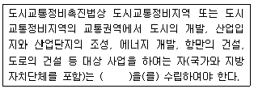
- 환경영향평가
- 도시교통정비 중기계획
- 교통영향분석ㆍ개선대책
- 타당성평가
(정답률: 58%)
100. 주차장법규상 지하식 또는 건축물식 노외주차장의 차로 기준이 옳은 것은?
- 높이는 주차바닥면으로부터 2.5m 이상이어야 한다.
- 곡선 부분은 자동차가 4m 이상의 내변반경으로 회전할 수 있도록 하여야 한다.
- 경사로의 종단경사도는 직선 부분에서는 17%, 곡선 부분에서는 14%를 초과하여서는 아니 된다.
- 주차대수 규모가 50대 이상인 경우의 경사로는 너비 5m 이상인 2차로를 확보하거나 진ㆍ출입차로를 통합하여야 한다.
(정답률: 56%)
6과목: 교통안전
101. 교통사고의 유발요인을 인적 요인, 차량 요인, 환경적 요인으로 구분하였을 때, 다음 중 환경적 요인에 해당하지 않는 것은?
- 운전습관
- 교통조건
- 도로상태
- 자연환경
(정답률: 94%)
102. 교통안전표지 중 정주식 표지의 적정 설치높이는?
- 10~40m
- 50~80m
- 100~210m
- 450~500m
(정답률: 75%)
103. 다음 중 전체사고 건수에 대한 비율이 가장 높은 사고유발 인자는?
- 차량요인
- 도로요인
- 인적요인
- 환경요인
(정답률: 87%)
104. 다음 중 교통사고 현장에 나타나 있는 요마크(Yaw mark)로부터 차량의 속도를 추정할 때 사용되지 않는 항목은?
- 요마크의 길이
- 타이어-노면의 마찰계수
- 노면의 횡단경사
- 요마크의 곡선반경
(정답률: 62%)
1⑤. 차량이 하루에 18600대가 통행하는 자동차 전용도로의 300m 구간에서 3년간 교통사고가 27건 발생하였을 때 연간 통행량 1억대ㆍkm당 사고건수는?
- 약 221건
- 약 442건
- 약 663건
- 약 1326건
(정답률: 71%)
106. 교통사고가 다발하는 단로부(mid-block)에서 보행자 횡단에 의한 사고를 개선하기 위한 대책으로 거리가 먼 것은?
- 차로폭의 재조정
- 입체횡단시설 설치
- 횡단보도 예고표지 신설
- 마찰계수가 높은 노면포장
(정답률: 82%)
107. 한 차량이 60m 거리를 미끄러져 주차한 차량과 충동하였으며 충돌 후 두 차량이 함께 20m를 미끄러져 정지하였다. 양 차량의 무게가 동일할 때 주행차량의 초기속도는? (단. 마찰계수는 0.5로 가정한다.)
- 130.1 km/h
- 133.3km/h
- 139.3km/h
- 145.1km/h
(정답률: 66%)
108. 자동차 타이어의 트레드(tread)에 대한 설명으로 틀린 것은?
- 타이어가 옆으로 흔들리는 것을 방지
- 타이어 내부에서 발생하는 열을 방산
- 차량의 목적에 알맞은 구동력, 선회성 확보
- 자동차의 진행방향을 임의로 바꿀 수 있는 장치
(정답률: 78%)
109. 다음 중 교차로 교통사고로 간주되지 않는 것은?
- 교차부 내에서의 교통사고
- 교차로 접근로에서 좌회전하기 위한 차선변경 중 교통사고
- 교차로 접근로에서 우회전하기 위한 차선변경 중 교통사고
- 건물 유출입로의 교차부에서 발생한 교통사고
(정답률: 85%)
110. 지하횡단보도를 계획하는 경우와 가장 거리가 먼 것은?
- 도시 미관을 해칠 우려가 있는 경우
- 횡단보도육교에 비하여 공사비ㆍ공법 등이 유리한 경우
- 지장물로 인해 육교의 높이가 너무 높아 그 이용이 곤란한 경우
- 횡단 보행자가 극히 적은 공원 등의 경우
(정답률: 86%)
111. 다음 중 충격흡수시설의 주된 설치장소로 볼 수 없는 것은?
- 터널 및 지하차도 입구
- 연결로 출구 분기점
- 교통섬 주변
- 요금소 전면
(정답률: 73%)
112. 중앙분리대를 설치하여 많이 감소시킬 수 있는 사고의 유형은?
- 측면충돌사고
- 추돌사고
- 정면충돌사고
- 전복사고
(정답률: 95%)
113. 다음 중 교통안전표지의 설치방법이 아닌 것은?
- 정주식
- 문형식
- 부착식
- 현수식
(정답률: 58%)
114. 다음 중 치사율을 올바르게 나타낸 식은?
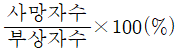
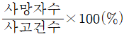
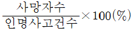
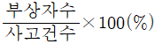
(정답률: 84%)
115. 중량이 2000kg인 차량이 시속 30km로 달리다가 정차중인 1000kg 중량의 차량과 충돌하여 얼마의 거리를 밀고 나가 정차하였다면 충돌 직후의 속도는 얼마인가?
- 5km/h
- 10km/h
- 15km/h
- 20km/h
(정답률: 58%)
116. 교차로에서 좌회전 교통량이 많아 발생하는 좌회전충돌사고를 방지하기 위한 대책으로 거리가 먼 것은?
- 교차로의 도류화
- 교차로 내부공간 확대
- 좌회전 신호 현시
- 회전 유도차선 표시
(정답률: 78%)
117. 어떤 차량이 노면 마찰계수가 0.7인 평탄한 도로에서 앞차량과의 추돌을 피하기 위해 급정거하여 15.5m를 미끄러진 후 정지하였을 때 이 차량의 미끄러지기 전의 속도는 얼마인가?
- 42.3 km/h
- 52.5 km/h
- 59.4 km/h
- 60.9 km/h
(정답률: 64%)
118. 교통사고의 특성에 관한 설명 중 틀린 것은?
- 평면 곡선부가 종단경사와 중복되는 곳은 사고 위험성이 크다.
- 차로 폭을 확장했을 때 사고율이 감소한다.
- 하향경사에서 상향경사보다 대형교통사고가 많이 발생한다.
- 인터체인지에서 램프의 사고율은 주도로나 램프의 교통량에 가장 크게 영향을 받는다.
(정답률: 56%)
119. 세갈래 교차로와 네갈래 교차로는 각각 몇 개의 교차상충지점을 가지는가?
- 3개, 8개
- 3개, 16개
- 4개, 16개
- 9개, 32개
(정답률: 74%)
120. 교통사고 대책대안의 검토절차로 옳은 것은?
- 현장확인 및 검토-교통운영의 기본요건 검토-빈발하는 사고유형에 새로운 적용검토-대책대안들의 비교검토
- 대책대안들의 비교검토-교통운영의 기본요건 검토-빈발하는 사고유형에 새로운 대책의 적용검토-현장확인 및 검토
- 교통운영의 기본 요건 검토-빈발하는 사고유형에 새로운 대책의 적용검토-현장확인 및 검토-대책대안들의 비교검토
- 빈발하는 사고유형에 새로운 대책의 적용검토-현장확인 및 검토-대책대안들의 비교검토-교통운영의 기본요건 검토
(정답률: 77%)